Consultation: Trade Allocator
A project built for a brokerage firm. Some details are intentionally left out to protect the identity of the client.
Main objective
Leverage clients' position interests in FX forwards and pair them off against each other to generate the highest possible volume of trades — offboarding exposure to changes in the underlying FX curve shape while maintaining exposure to curve shifts.
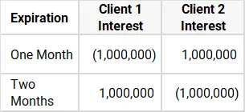
To offboard exposure for the above clients, they are paired off with each other: Client 1 buys a 1mm position and sells a 1mm position to Client 2. Curve-shift exposure is maintained since each client's net position change is 0.
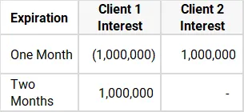
In this scenario, no trades are made for either client. Position interest can be matched on "One Month," but the trade wouldn't net to 0 for either client — Client 1 would start with zero curve-shift exposure and end with 1mm of it.
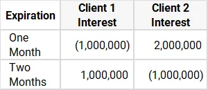
However, the ending exposure doesn't have to equal 0 — only the change in curve-shift exposure does. The situation above yields two trades: Client 1 buys 1mm of "One Month" from Client 2, and sells 1mm of "Two Months" to Client 2.
So why do we need a program to do this? It can get a little more complicated:
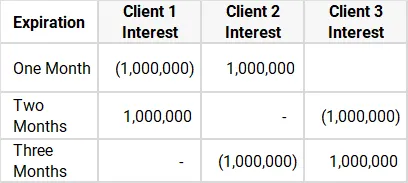
This one takes three trades across three clients and three expiries — curve-shift exposure unchanged, shape exposure offboarded. Still doable by a human. Now take a real case:
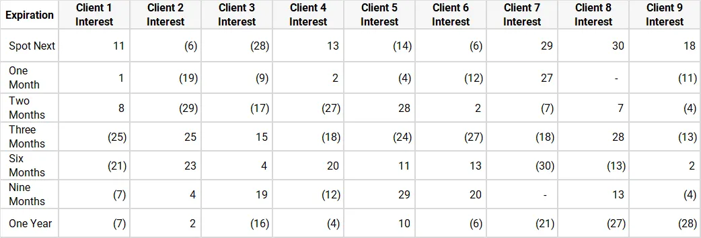
Listed amounts in millions (mm) for readability
A human cannot generate the maximum possible trades from this. This is a job for linear programming. Going back to the first example, visualized differently:
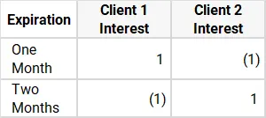
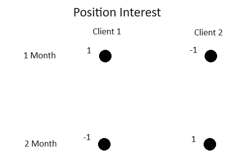
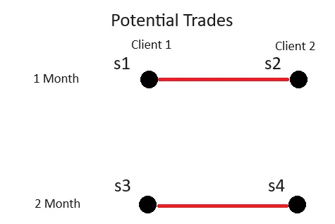
Red lines are potential trades. "s" stands for side.
The model
This matrix flattens into a simple formula — (s1−s2) + (s4−s3) = maximum possible figure — entered into a PuLP solver. Constraint formulas ensure the generated trades fit the requirements of a financial trade and the exposure rules:
- Sides of the same trade must be equal and opposite (s1+s2=0, s3+s4=0)
- Each side is bounded so the objective stays an offboarding of positions (0 ≤ s1 ≤ 1, 0 ≥ s2 ≥ −1, …)
- The net impact on each client's total position must be 0 to maintain curve-shift exposure (s1+s3=0, s2+s4=0)
With 3 or more clients, the constraint set grows:
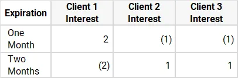
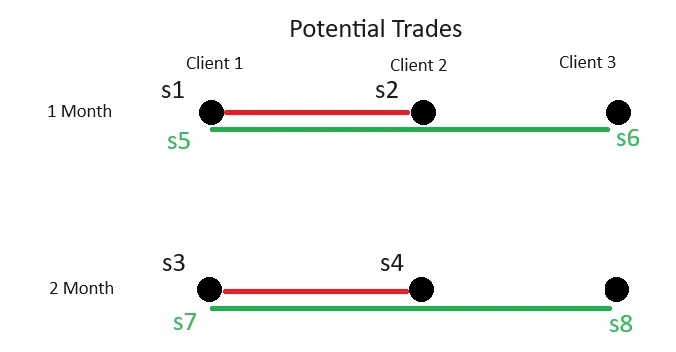
The objective becomes (s1−s2) + (s4−s3) + (s5−s6) + (s8−s7), and a new constraint appears: where multiple sides share a position point (s1 and s5), they must jointly stay within it — s1+s5 ≤ 2.
Additional considerations
- Blackballed clients — some clients cannot trade with each other due to credit restrictions or shared parent companies
- "Wildcard" trades — some firms accept alternative expiries because they're liquid and easily offboarded
Sample code
def main(args):
#load matrices
positions_matrix_raw = create_positions_matrix(file_name=positions_file)
index_1m = find_index_1m(positions_matrix_raw, fixing_date_1m)
#populate trades_list
trades_list = TradesList()
trades_list = add_normal_trades(trades_list, positions_matrix, ...)
trades_list = add_wildcard_trades(trades_list, positions_matrix, ...)
#create model and variables in model
model = p.pulp.LpProblem('linear_programming', p.LpMaximize)
solver = p.getSolver('PULP_CBC_CMD')
trades_list = create_model_vars(trades_list)
model = create_model_objective(trades_list, model)
model = add_pair_constraints(trades_list, model)
model = add_position_coordinates_constraints_reg(trades_list, model, ...)
model = add_holder_contraints(trades_list, model, positions_matrix)
results = model.solve(solver=solver)
#export to csv
df_trades_paired.to_csv('Paired Trades Results.csv', index=False)
positions_matrix_post_trades.to_csv('Position Matrix After Trades.csv', index=False)
The allocator runs as part of an ETL, producing reader-digestible trades that can be copied straight into Bloomberg:
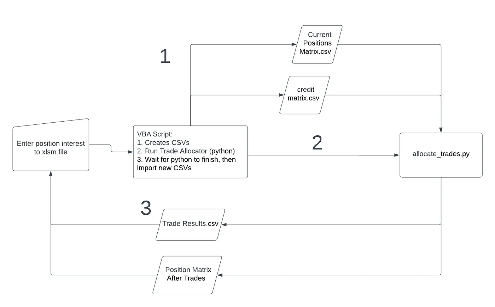
Eventually this can be moved into a database for better record-keeping (and less exposure to corrupt Excel files!).